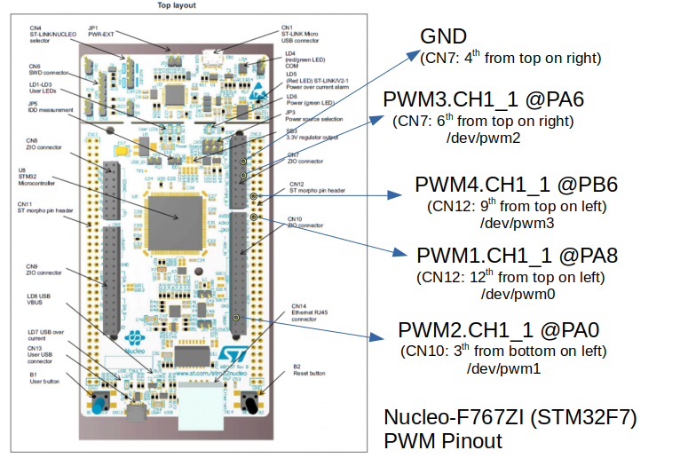

$ whois Phil Coval
- Software Engineer from Rennes, France
- Opensource Contributor, Mozilla Rep (IoT)
- Involved in industry's OSS:
- Tizen (Intel), Yocto, IoTivity (Samsung)
- Contact: https://purl.org/rzr (@RzrFreeFr)
- Presentations, Videos, Social…
- Currently available for cooperation
Disclaimer
- This talk is not about:
- State of the art in Robotics
- Hard real time on critical systems
- It's about experimenting "Web of Twins"
Do NOT reproduce in a critical context
Challenge
- Let's build a Robot
- running on JavaScript
- developed/simulated on Linux
- deployed to MCU supporting NuttX
- Target ST Nucleo-F767ZI board
- Controlled from applications
- from IoT gateway
- from VR world (Digital Twin)
MeArm robotic arm


NuttX Operating System
- RTOS Committed to comply standards
- POSIX, ANSI C
- File based IO (/dev), BSD sockets (uIP)
- Released by Gregory Nutt in 2007
- incubated by Apache Foundation
- Base of derived projects:
- TizenRT, PX4, Sony Spresense
STM32 Microcontroller
- Requirements:
- IO: 4+ PWM signals (Hardware)
- Connectivity (Ethernet)
- Memory: ~200K For JS runtime and app
- Nucleo F767ZI board from ST
- STM32F7 is a good candidate
- Cortex-M7 (Compat. M4 / STM32F4)
- RAM: 320 KB, Flash: 2 MB
- IO: Nucleo-144 Pins
- STM32F7 is a good candidate
Nucleo F746ZG
STM32F7 NuttX port
Pin out

PWM Signal
Scripting MCUs
- Low level vs High level programming
- Isolate applications (security framework)
- Faster to develop, deploy
- JavaScript on the Web and beyond
- Many developers, libraries
- Several low footprint implementations:
IoT.js : JavaScript runtime
- Use JerryScript interpreter (ES 5.1)
- Low footprint: Flash=180+KB RAM=26KB
- Built in Modules:
- I/O: GPIO, ADC, PWM, I2C, SPI, UART
- Net: IP, HTTP, MQTT, WS, BLE, DNS
- Sys: FS/ROM, Crypto…
- External JS modules
- Support: Linux, Tizen, NuttX, TizenRT
IoT.js and NuttX
- IoT.js hosted outside NuttX's repo
- can be integrated as external app
- build using python scripts (ask me how)
- Supported Platforms:
- STM32F4-Discovery on NuttX
- ARTIK05x on TizenRT
- JS Scripts stored on ROMFS
- Start "iotjs example.js" from nsh after DHCP
IoT.js contribution
- Committed stm32f7nucleo native module
- inspired by ref board SMT32F4 discovery
- Initialize I/O: ADC, GPIO, PWM, TIM
- using NuttX API for STM32
- Extra iotjs_modules:
- iotjs-express for REST API
- webthing-iotjs for describing resources
Web App
WebThings
- Mozilla IoT smart-home platform
- with privacy by design
- inspired by W3C WebOfThings (WoT)
- Framework to build webthings
- Mozilla IoT schema (in JSON)
- Supports: Node, Python, Rust, Arduino…
- webthing-iotjs for IoT.js (ported from Node.js)
- Mozilla WebThings gateway
- UI to control webthings from browser
WebThings REST API
$ curl http://192.168.0.42:8888
{ (...) "properties":{"arm":{
"type":"number",
"minimum":-90,"maximum":90,
"description":"Rotary actuator on /dev/pwm2" (...)
"links":[{"rel":"property","href":"/properties/arm" (...)
$ curl http://192.168.0.42:8888/properties
{"torso":0,"shoulder":0,"arm":0,"hand":0}
$ curl -H "Content-Type: application/json" \
-X PUT --data '{"arm": 42}' \
http://192.168.0.42:8888/properties/arm
{"arm":42}
Web of Twins Robot
Web of Twins demo
Summary
- Robot is composed of 4 servo motors
- controlled by 4 PWM signals
- from MCU STM32F7 Nucleo144 Board
- JS Application run by IoT.js:
- interpreted by JerryScript
- on top of NuttX OS
- uses built in modules: HW, IO, Net
- Along iotjs-module's webthing-iotjs:
- exposes Motors angles using HTTP/REST
- generates control signals (PWM)
Resources
- Feedback welcome
- Sources:
https://nuttx.events

- Thanks:
- Alan, Alin, Greg and NuttX community !
- Apache, Mozilla, ST, Samsung-OSG…
- https://github.com/rzr/rzr-presentations
- License: CC-BY-SA-4.0 ~RzR 2020
- Copyrights belong to their respective owners

Playback
More
Playlist